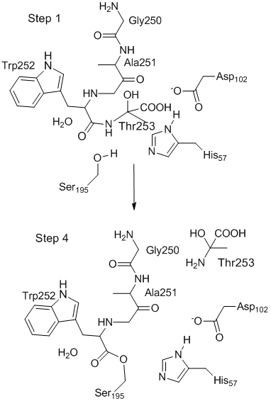

(Modeling proteins) (Chymotrypsin Mechanism: Step 1, Step 2, Step 3, Step 4, Step 5, Step 6)
|
 This is not a genuine transition state. The reaction in going from Step 1 to Step 4 would proceed through intermediate steps. Toggle display all Toggle center picture Fit to screen Interesting parts:
Toggle spin Toggle stereo |